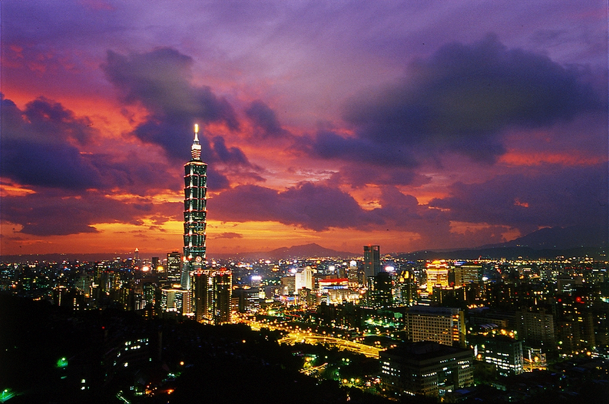

Taipei 101簡介
於2004年12月31日隆重開幕的Taipei 101（台北101），位於信義商圈，緊鄰台北市政府，同時也是台北地區的新興金融大樓，是台灣繼高鐵案之後，政府獎勵民間投資的大型BOT開發案；由台灣十二家銀行及產業界共同出資興建，造價逾新台幣580億元，是由著名建築師李祖原負責設計及監造，Taipei 101除了利用底部群樓作為購物商場外另為台北金融商業重鎮，台灣股市證券交易所也遷移至此。
Taipei 101達9,159坪的基地面積，也是台灣工程史上的重大突破，建設當時「Discovery建築奇觀」節目還曾遠道來台實地拍攝，這座具有展現台灣經濟實力的第一高樓，也因此躋身世界最高建築的行列；在Taipei 101中還有設置於88樓至92樓中央位置（從92樓懸掛至87樓），直徑5.5公尺，重660公噸的世界最大的「被動式風阻尼器」，它也是唯一可供民眾參觀風阻尼器，用以減低高樓受強風吹襲以及地震時的主要避震設施，確保整棟101大樓的穩定度及民眾的舒適度，前往88樓觀景台即可前往參觀，並且可以用最近的距離與其合影留念，實為另一番不同的體驗。
Taipei 101─購物中心
Taipei 101購物中心群樓商場有地上101層、地下5層、高508米，落成之際曾名列世界最高樓（目前為世界第四、亞洲第三），Taipei 101購物中心其中B2-B4為停車場，B1至4樓共有5層樓的購物中心，5樓則為數家銀行與證券服務金融中心進駐服務，6樓至84樓為一般辦公大樓，85樓為商務俱樂部，86至88樓為觀景餐廳，89樓為室內觀景層，91樓為室外觀景台，觀景台面積約761坪，象徵未來之窗的觀景台。
挑高寬敞的設計空間，將帶給來此的消費者感受前所未有的購物享受及絕無僅有的視覺和空間感受，讓逛街不再是擁擠的搶購，而是逛得輕鬆、買得優雅的超高級享受。
＊B1 生活聚場：除了有各類品味生活及個性時尚商店，還提供來自各地的美食，設有上千個座位及舒適的用餐環境，提供您貼心的服務。
＊1F 101大道：全世界受歡迎的流行品牌都可在這裡見到，無論是服飾、配件、彩粧保養，讓您一次滿足時髦的消費慾望。
＊2F 時尚大道：與世貿中心及紐約紐約購物中心有空橋連接，時尚流行不錯失。各類知名品牌，極具個性及質感，滿足品味的堅持。
＊3F 名人大道：頂尖的名牌精品，最多的品牌旗艦店，宛如置身紐約第五大道，高雅舒適的購物環境，與全世界同步的流行趨勢，打造更亮眼的自己。
＊4F 都會廣場：挑高40米、佔地500多坪，精心設計採光及景觀，提供具有藝術氣息的娛樂休閒空間。另外還有露天咖啡座及精緻的點心，置身在彷如巴黎浪漫慵懶的氛圍，為忙碌的都會生活注入另類品味。另外還有多家歐式、泰式與中華料理餐廳，讓您在消費完再大啖美食一番。
＊5F 雅客大道：提供家居生活、金融、精緻宴會、數位產品以及台灣頂級的工藝品，讓購物顧客享受雅緻生活，以及獲得全方位的生活所需，另可於此樓層搭乘快速電梯直達101觀景台，讓您一覽台北美麗全景。
信義區旅遊
來到台北市繁榮的信義區，一定要到一些旅遊景點體驗台北的繁榮景象，除了台北國際會議中心、台北世界貿易中心(台北世貿)等著名地標外，還有四獸山公園、福壽公園、國父紀念館、信義商圈、台北信義威秀影城等等，讓您抓住台北的每一腳步，體驗台北的每一處熱情。
由法國導演盧貝松(Luc Besson)拍攝，史嘉莉喬韓森(Scarlett Johansson)主演的電影《露西(LUCY)》2014年8月全球上映，電影特地到台北取景，包括台北101、永樂市場、大稻埕、台北機廠、三軍總醫院汀州院區、晶華酒店、桃園機場、Club Myst夜店、和平東路及敦化南路的地下道等景觀大量出現在電影中，讓全世界更認識台北這個繁華的城市。